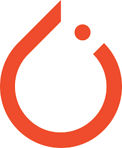
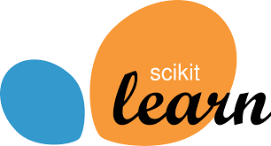

Hey, I am Ramachandran
Upcoming Software Engineer at Nokia. Specialized in Backend Systems and Agentic AI Development, with a strong foundation in DevOps and Test Automation. Recently graduated with a Master's in Computer Science from University at Buffalo (AI/ML track).

Work Experience
Software Dev Cloud Intern
Nokia Bell Labs
- • Built cloud-native lifecycle automation for Nokia CMM across Kubernetes environments (NCS, OpenShift) using NCOM, enabling reliable deployment, scaling, and upgrade workflows.
- • Developed an extensible Python library exposing 30+ standardized API and logging abstractions, enabling programmatic integration across automation and orchestration workflows using Jenkins.
- • Automated CMM re-installation workflows for T-Mobile (TMO) using Python and NCOM+ tooling, to reduce manual re-installation time from ~9 hours.
Software Engineer
Dassault Systèmes
- • Built a scalable Python-based internal automation framework adopted by 40+ teams to orchestrate UI and API-driven workflows and CI/CD execution using goCD and Github Actions, significantly reducing manual operational effort.
- • Led a platform decentralization initiative by modularizing shared libraries, defining versioned packaging patterns, and automating artifact publishing to Artifactory using GitHub Actions, enabling team-owned repositories and independent releases.
- • Worked on cloud infrastructure migration and optimization on AWS, designing reusable Terraform modules and rightsizing EC2 resources to achieve ~60% cost reduction and faster environment provisioning.
- • Engineered and deployed an internal developer productivity tool to index and search library keywords across 10+ repositories, improving discoverability and onboarding efficiency.
- • Implemented centralized observability and analytics using structured logging and Sumo Logic dashboards to provide real-time visibility into test pipeline health for 30+ teams.
- • Led data validation for a production AWS DMS migration (MySQL → PostgreSQL) by building automated Ruby/SQL integrity checks, ensuring data correctness and reducing manual validation effort by ~90%.
Core Skills
Python
TypeScript
FastAPI
Next.js
Docker
Kubernetes

PyTorch

Scikit-learn
Terraform
GitHub Actions